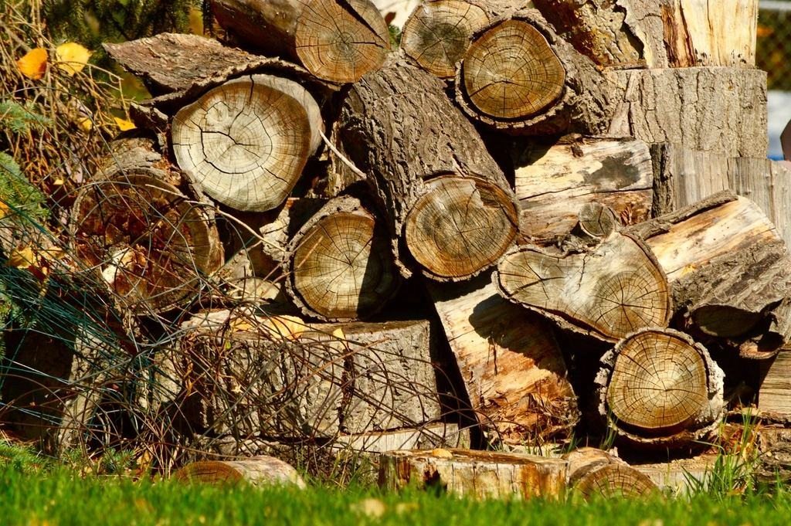

Priser
Vi lämnar alltid fast pris efter en kostnadsfri besiktning.
Pris per träd och mätmetod
Besiktning villatomt
VTA-bedömning med skriftligt protokoll.
2 400 krupp till 3 träd- Besök med certifierad arborist
- Riskklass och åtgärd per träd
- Protokoll med foto inom tio dagar
- Avräknas vid åtgärd hos oss
- Vanligast
Besiktning med tomografi
När du behöver veta hur rötat trädet är.
5 900 krförsta trädet- VTA plus ljudtomografi
- Tvärsnittsbild av stammen
- Beräkning av kvarvarande hållfasthet
- Genomgång av resultatet på plats
Kronstabilisering
Dynamiskt stag som avlastar tvåstammiga träd.
fr. 4 800 krper stag inkl. montage- Stag dimensionerat efter trädet
- Montage med klättring
- Lätt beskärning vid behov
- Kontroll efter två år
Fler priser
| Tomografi, ytterligare träd samma dag | 3 200 kr |
|---|---|
| Resistografmätning per träd | 1 400 kr |
| Dragprov per träd | fr. 8 500 kr |
| Besiktning av bestånd, per träd över 20 | 180 kr |
| Akut bedömning inom 48 h | 3 900 kr |
| Arborist, timpris vid åtgärd | 740 kr/tim |
| Fällning upp till 15 m | fr. 6 200 kr |
| Kurs i VTA för personal, två dagar | fr. 28 000 kr |
Priser inklusive moms. Besiktning ger inte RUT-avdrag, åtgärder på villatomt gör det.
Från beställning till protokoll
- 1

Beställning
Du beskriver trädet eller beståndet och vad du vill veta. Vi föreslår rätt nivå av besiktning.
- 2

Bedömning på plats
Vi går igenom träden enligt VTA. Där ögat inte räcker mäter vi med tomograf eller dragprov.
- 3

Protokoll
Inom tio arbetsdagar får du protokoll med foto, mätvärden, riskklass och åtgärd med tidsgräns.
- 4

Åtgärd och uppföljning
Vi utför åtgärderna om du vill och lägger in nästa kontroll i kalendern.
Frågor om besiktning och mätning
Hittar du inte svaret? Ring eller mejla oss.
Vad är VTA?
Visual Tree Assessment, en internationellt etablerad metod för att bedöma trädets hållfasthet utifrån hur det växer och var det har skador.
Skadar tomografen trädet?
Nej. Vi slår in små spikar i barken och mäter ljudets hastighet genom stammen. Resistografen borrar ett hål på 3 mm som trädet läker.
Hur ofta ska träd besiktas?
Träd där många människor vistas bör kontrolleras vart tredje år, riskträd varje år. Efter kraftiga stormar bör man göra en extra kontroll.
Kan protokollet användas i tvist med grannen?
Ja, våra protokoll används ofta som underlag i grannetvister och försäkringsärenden. Vi är opartiska i bedömningen.
Får jag RUT för besiktning?
Nej, besiktning ger inte RUT. Själva beskärningen och fällningen på din villatomt ger däremot RUT-avdrag.
Vad händer om trädet är akut farligt?
Vi spärrar av och åtgärdar inom 48 timmar. Du får alltid besked på plats om trädet måste tas ned direkt.